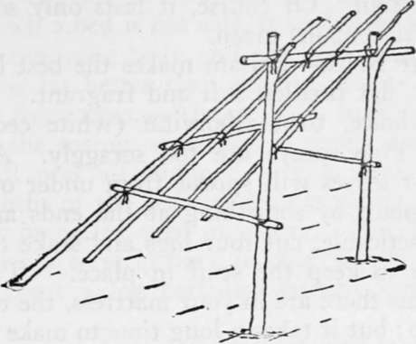
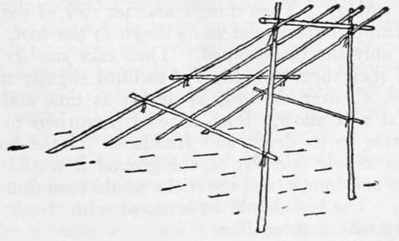

Tomahawk Shelters. Axemen's Camps. Caches. Masked Camps. Part 2
Description
This section is from the book "Camping And Woodcraft", by Horace Kephart. Also available from Amazon: Camping and Woodcraft.
Tomahawk Shelters. Axemen's Camps. Caches. Masked Camps. Part 2
This is what I call a "straddle-bug" frame (see dotted lines in Fig. 56). It is economical of time and material, as it takes but five sticks. It is a particularly good frame to use if one has a poncho or pack cloth, which is spread over the top, tied to the side bars, and the whole is then covered with boughs. This ensures a dry spot to sleep on, and makes a very snug shelter in snowy weather, as no wind can get through, nor snow-water leak through from the top (snow does not melt at the sides) from the heat of the camp-fire.
Brush Lean-To
If two trees happen to stand in the right position, run a stout ridge pole horizontally from one to the other, secured in forks of low limbs, or in notches cut in the trees, or by nailing, or tying (use twisted withes, pliable rootlets, or bark straps, if you have no cord). Against this lay poles sloping backward to the ground like a shed roof. Fasten a cross bar on the back, and one on each side, to stiffen the frame and to support thatching. Cover the roof and sides with evergreen boughs (balsam, hemlock, or spruce) hanging them from ridge and cross bars by stubs of their branchlets. trim them on the inside, and thatch them deepiy outside with small boughs, beginning at the bottom, so that each layer will be overlapped by the one above it, like shingles. Lay the thatch w*ith feathery tips down.
Fig. 57. Stake Frame for Lean-to.
When no trees grow where you want your bed, set up two lorked stakes, slanting slightly outward at the butts so they will not need bracing, to hold your ridge pole (Fig. 57), and proceed as above. If the ground is too stony or frozen to plant stakes in, usg shear poles (Fig. 58), letting them flare outward so as to brace in every direction.
Fig. 58. Shear Frame for Lean-to.
A frame must be stout enough, in winter, to hold up the weight of a snowfall. The lower the frame, the less material needed. Five feet to the ridge is high enough for a "one-night stand".
Any such bower is delightfully woodsy and sweet-scented, but it is not good protection against long 01 heavy rain. Of course, it lasts only so long as the browse remains green.
Bough Beds
Balsam makes the best bed, as it has thick, flat needles, soft and fragrant. Hemlock is next choice, then arborvitae (white cedar) and, spruce. Pine sprays are too scraggly. A bed of boughs or leaves will spread from under one if not held in place by something at the ends and sides; so, if practicable, cut four logs and stake them in a rectangle to keep the stuff in place. The fewer thick stems there are in your mattress, the easier you will sleep; but it takes a long time to make a browse bed of only the feathery tips; and you may be too hurried and weary.
For the first course use branchlets from eighteen inches to two feet long. Begin at the head end, lay them against the log, butts down, bottom or convex side up, and stick them in the ground with butts slanting only a little to the front, to make the bed springy. Then shingle another row of the fans in front of these, and so on down to the foot, leaving only the tips exposed. Then take smaller ones and stick them upright, tips inclined slightly to the head, all over the bed, as thickly as time and material will allow. Such a bed is luxurious in proportion to its depth and freshness. If the browse were merely laid flat on the ground it would pack hard and lumpy, and the sticks would soon find your ribs. The bed should be renewed with fresh stuff every two or three days.
Balsam twigs should not be cut, but snapped off, Grasp the stem with two front fingers underneath, pointing toward the tip, and thumb on top, then press downward with the thumb and give a quick twist of the wrist.
Where there are no evergreens, collect small green branches of willow, cherry, alder, or any tree or shrub that is springy and supple. Lay a course oi these on the ground and cover with moss, dead grass, dry leaves, or whatever soft stuff you can find. Green leafy branchlets, ferns, rushes, herbage, and so forth, will do, if you can get nothing better. Even if such a bed is not soft, it will serve as insulation between your body and the cold, damp earth, and that is far better than none at all.
Bark Shelters
Almost any bark will peel freely in the spring, when sap is rising, and several kinds will peel all summer. Elm peels through eight months of the year, and some young basswood trees may be peeled even in winter. But, as a rule, if one wishes to strip bark in cold weather he will have to roast a log carnally without burning the outside.
Barking a tree generally kills it, and is prohibited on public lands. But in the far wilderness such barking as campers would do is not detrimental to the forest, which generally needs thinning out, anyway.
The bark of the following trees makes good roofs and temporary shelters, and is useful for many other purposes: Paper birch, cedar, basswood, buckeye, elm, pig-nut hickory, spruce, hemlock, chestnut, balsam fir, white ash, yellow poplar and cottonwood. (That of the paper birch and of cedar, is quite inflammable). Select a tree with smooth and faultless trunk. If it is a birch, choose one with bark that is thick, with few and small "eyes." If it is of a species that has rough, hard, furrowed bark on old trees, pick out a young one that still is smooth on the outside, or treat as described below.
For a temporary roof it will be enough merely to skin the bark off in long strips eight to twelve inches wide, lay a course lengthwise with the slope of the roof, convex side up, and then another on top of this with concave side up, so that the first course will form troughs to run off the water that is shed by the second (Fig. 59). One axeman can erect a rainproof shelter in this way, from the bark of young chestnut trees, for example, in less than an hour. It will not last long, however, as the sun will curl the troughs inward. If a tree is felled for the purpose of stripping its bark, first place a short log near the butt as a skid for it to fall on.
Continue to:
- prev: Chapter XIII. Tomahawk Shelters. Axemen's Camps. Caches. Masked Camps
- Table of Contents
- next: Tomahawk Shelters. Axemen's Camps. Caches. Masked Camps. Part 3